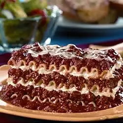

HOME
Lasagna

Easy Beef Lasagna
Waiting for the lasagna to come out of the oven is the hardest part of this simple recipe.
Ingredients
- 1 pound ground beef
- 1 (26 ounce) jar RAGÚ® Old World Style® Traditional Sauce
- 1 (15 ounce) container ricotta cheese
- 2 cups shredded mozzarella cheese
- ½ cup grated Parmesan cheese, divided
- 2 large eggs eggs
- 12 each lasagna noodles, cooked and drained
Directions
- Preheat oven to 375 degrees F. Brown ground beef in 12-inch skillet; drain. Stir in Pasta Sauce; heat through.
- Combine ricotta cheese, mozzarella cheese, 1/4 cup Parmesan cheese and eggs in large bowl.
- Evenly spread 1 cup meat sauce in 13 x 9-inch baking dish. Arrange 4 lasagna noodles lengthwise over sauce, then top with 1 cup meat sauce and 1/2 of the ricotta cheese mixture; repeat, ending with sauce. Cover with aluminum foil and bake 30 minutes. Remove foil and sprinkle with remaining 1/4 cup Parmesan cheese. Bake uncovered an additional 5 minutes. Let stand 10 minutes before serving.
Nutrition Facts
Per Serving: 373 calories; protein 25.7g; carbohydrates 29.9g; fat 16.6g; cholesterol 95.9mg; sodium 578.9mg.